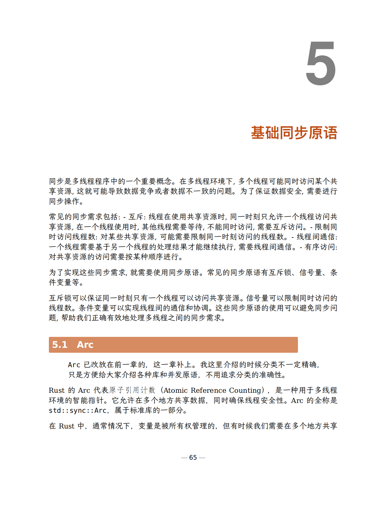

同步是多线程程序中的一个重要概念。在多线程环境下,多个线程可能同时访问某个共享资源,这就可能导致数据竞争或者数据不一致的问题。为了保证数据安全,需要进行同步操作。
常见的同步需求包括:
- 互斥:线程在使用共享资源时,同一时刻只允许一个线程访问共享资源,在一个线程使用时,其他线程需要等待,不能同时访问,需要互斥访问。
- 限制同时访问线程数:对某些共享资源,可能需要限制同一时刻访问的线程数。
- 线程间通信:一个线程需要基于另一个线程的处理结果才能继续执行,需要线程间通信。
- 有序访问:对共享资源的访问需要按某种顺序进行。

为了实现这些同步需求,就需要使用同步原语。常见的同步原语有互斥锁、信号量、条件变量等。
互斥锁可以保证同一时刻只有一个线程可以访问共享资源。信号量可以限制同时访问的线程数。条件变量可以实现线程间的通信和协调。这些同步原语的使用可以避免同步问题,帮助我们正确有效地处理多线程之间的同步需求。
Arc
Arc已改放在前一章的，这一章补上。我这里介绍的时候分类不一定精确，只是方便给大家介绍各种库和并发原语，不用追求分类的准确性。
Rust的Arc代表原子引用计数（Atomic Reference Counting），是一种用于多线程环境的智能指针。它允许在多个地方共享数据，同时确保线程安全性。Arc的全称是std::sync::Arc，属于标准库的一部分。
在Rust中，通常情况下，变量是被所有权管理的，但有时候我们需要在多个地方共享数据。这就是Arc的用武之地。它通过在堆上分配内存，并使用引用计数来跟踪数据的所有者数量，确保在不需要的时候正确地释放资源。
下面是一个简单的例子，演示了如何使用Arc：
1 2 3 4 5 6 7 8 9 10 11 12 13 14 15 16 17 18 19 20 21 22 23 24 25 26 27 28
| use std::sync::Arc; use std::thread; fn main() { let data = Arc::new(46); let thread1 = { let data = Arc::clone(&data); thread::spawn(move || { println!("Thread 1: {}", data); }) }; let thread2 = { let data = Arc::clone(&data); thread::spawn(move || { println!("Thread 2: {}", data); }) }; thread1.join().unwrap(); thread2.join().unwrap(); }
|
Arc（原子引用计数）和Rc（引用计数）都是Rust中用于多所有权的智能指针，但它们有一些关键的区别。
- 线程安全性：
Arc 是线程安全的，可以安全地在多线程环境中共享。它使用原子操作来更新引用计数，确保并发访问时的线程安全性。Rc 不是线程安全的。它只适用于单线程环境，因为它的引用计数操作不是原子的，可能导致在多线程中的竞态条件和不安全行为。
- 性能开销：
- 由于Arc使用原子操作来更新引用计数，相对于Rc，Arc的性能开销更大。原子操作通常比非原子操作更昂贵。
- Rc在单线程环境中性能更好，因为它不需要进行原子操作。
- 可变性：
Arc 不能用于可变数据。如果需要在多线程环境中共享可变数据，通常会使用Mutex、RwLock等同步原语和Arc。Rc 也不能用于可变数据，因为它无法提供并发访问的安全性。
- 引用计数减少时的行为：
- 当Arc 的引用计数减少为零时，由于它是原子的，它会正确地释放底层资源（比如堆上的数据）。
- Rc 在单线程中引用计数减少为零时会正确释放资源，但在多线程中可能存在问题，因为它没有考虑并发情况。
总之你记住在多线程的情况下使用Arc，单线程的情况下使用Rc就好了。
当你需要在多线程环境中共享可变数据时，常常会结合使用Arc和Mutex。Mutex（互斥锁）用于确保在任意时刻只有一个线程能够访问被锁定的数据。下面是一个简单的例子，演示了如何使用Arc和Mutex来在多线程中共享可变数据：
1 2 3 4 5 6 7 8 9 10 11 12 13 14 15 16 17 18 19 20 21 22 23 24 25 26 27 28
| use std::sync::{Arc, Mutex}; use std::thread; fn main() { let counter = Arc::new(Mutex::new(0)); let mut handles = vec![]; for _ in 0..5 { let counter = Arc::clone(&counter); let handle = thread::spawn(move || { let mut num = counter.lock().unwrap(); *num += 1; }); handles.push(handle); } for handle in handles { handle.join().unwrap(); } println!("Final count: {}", *counter.lock().unwrap()); }
|
Arc和 RefCell 结合使用的场景通常发生在多线程中需要共享可变状态，但又不需要互斥锁的场合。RefCell允许在运行时进行借用检查，因此在单线程环境下使用时，它不会像 Mutex 那样引入锁的开销。
以下是一个使用 Arc 和 RefCell 的简单例子，演示了在多线程环境中共享可变状态,注意这个例子只是用来演示，我们并不期望num的最终结果和上面的例子一样：
1 2 3 4 5 6 7 8 9 10 11 12 13 14 15 16 17 18 19 20 21 22 23 24 25 26 27 28 29
| use std::sync::{Arc}; use std::cell::RefCell; use std::thread; fn main() { let counter = Arc::new(RefCell::new(0)); let mut handles = vec![]; for _ in 0..5 { let counter = Arc::clone(&counter); let handle = thread::spawn(move || { let mut num = counter.borrow_mut(); *num += 1; }); handles.push(handle); } for handle in handles { handle.join().unwrap(); } println!("Final count: {}", *counter.borrow()); }
|
互斥锁 Mutex
互斥锁历史悠久，在很多编程语言中都有实现。
Mutex 是 Rust 中的互斥锁，用于解决多线程并发访问共享数据时可能出现的竞态条件。Mutex 提供了一种机制，只有拥有锁的线程才能访问被锁定的数据，其他线程必须等待锁的释放。
Lock
在标准库中，Mutex 位于 std::sync 模块下。下面是一个简单的例子，演示了如何使用 Mutex：
1 2 3 4 5 6 7 8 9 10 11 12 13 14 15 16 17 18 19 20 21 22 23 24 25 26 27 28
| use std::sync::{Mutex, Arc}; use std::thread; fn main() { let counter = Arc::new(Mutex::new(0)); let mut handles = vec![]; for _ in 0..5 { let counter = Arc::clone(&counter); let handle = thread::spawn(move || { let mut num = counter.lock().unwrap(); *num += 1; }); handles.push(handle); } for handle in handles { handle.join().unwrap(); } println!("Final count: {}", *counter.lock().unwrap()); }
|
在这个例子中，counter 是一个 Mutex 保护(且包装)的可变整数，然后使用 Arc 来多线程共享。在每个线程中，通过 counter.lock().unwrap() 获取锁，确保一次只有一个线程能够修改计数器的值。这样可以确保在并发情况下不会发生竞态条件。
需要注意的是，lock 方法返回一个 MutexGuard，它是一个智能指针，实现了 Deref 和 Drop trait。当 MutexGuard 被销毁时，会自动释放锁，确保在任何情况下都能正确释放锁。
这里注意三个知识点：
- 为了跨线程支持，一般
Mutex会和Arc组合使用,这样Mutex对象在每个线程中都能安全访问
lock方法返回实现了 Deref trait的MutexGuard对象，所以它会自动解引用，你可以直接调用被保护对象上的方法MutexGuard还实现了Drop, 所以锁会自动解锁，一般你不需要主动调用drop去解锁
目前nightly版本的rust提供了一个实验性的方法unlock,功能和drop一样，也是释放互斥锁。
try_lock
Mutex 的 try_lock 方法尝试获取锁，如果锁已经被其他线程持有，则立即返回 Err 而不是阻塞线程。这对于在尝试获取锁时避免线程阻塞很有用。
以下是一个使用 try_lock 的简单例子：
1 2 3 4 5 6 7 8 9 10 11 12 13 14 15 16 17 18 19 20 21 22 23 24 25 26 27 28 29 30 31
| use std::sync::{Mutex, Arc}; use std::thread; fn main() { let counter = Arc::new(Mutex::new(0)); let mut handles = vec![]; for _ in 0..5 { let counter = Arc::clone(&counter); let handle = thread::spawn(move || { if let Ok(mut num) = counter.try_lock() { *num += 1; } else { println!("Thread failed to acquire lock."); } }); handles.push(handle); } for handle in handles { handle.join().unwrap(); } println!("Final count: {}", *counter.lock().unwrap()); }
|
在这个例子中，try_lock 方法被用于尝试获取锁。如果获取成功，线程就可以修改计数器的值，否则它会打印一条消息表示没有获取到锁。
需要注意的是，try_lock 方法返回一个 Result，如果获取锁成功，返回 Ok 包含 MutexGuard，否则返回 Err。这使得你可以根据获取锁的结果执行不同的逻辑。
Poisoning
在 Rust 中，poisoning 是一种用于处理线程 panic 导致的不可恢复的状态的机制。这个概念通常与 Mutex 和 RwLock 相关。
当一个线程在持有锁的情况下 panic 时，这就会导致锁进入一种不一致的状态，因为锁的内部状态可能已经被修改，而没有机会进行清理。为了避免这种情况，Rust 的标准库使用 poisoning 机制(形象的比喻)。
具体来说，在 Mutex 和 RwLock 中，当一个线程在持有锁的时候 panic，锁就会被标记为 poisoned。此后任何线程尝试获取这个锁时，都会得到一个 PoisonError，它包含一个标识锁是否被 poisoned 的标志。这样，线程可以检测到之前的 panic，并进行相应的处理。
Mutex 通过在 LockResult 中包装 PoisonError 来表示这种情况。具体来说，LockResult 的 Err 分支是一个 PoisonError，其中包含一个 MutexGuard。你可以通过 into_inner 方法来获取 MutexGuard，然后继续操作。
以下是一个简单的例子，演示了锁的 "poisoning"，以及如何处理：
1 2 3 4 5 6 7 8 9 10 11 12 13 14 15 16 17 18 19 20 21 22 23 24 25 26 27 28 29 30 31 32 33 34 35 36 37 38 39 40 41 42 43 44 45 46
| use std::sync::{Mutex, Arc, LockResult, PoisonError}; use std::thread; fn main() { let counter = Arc::new(Mutex::new(0)); let mut handles = vec![]; for _ in 0..5 { let counter = Arc::clone(&counter); let handle = thread::spawn(move || { let result: LockResult<_> = counter.lock(); match result { Ok(mut num) => { *num += 1; if *num == 3 { panic!("Simulated panic!"); } } Err(poisoned) => { println!("Thread encountered a poisoned lock: {:?}", poisoned); let mut num = poisoned.into_inner(); *num += 1; } } }); handles.push(handle); } for handle in handles { handle.join().unwrap(); } println!("Final count: {}", *counter.lock().unwrap()); }
|
在这个例子中，当计数器的值达到3时，一个线程故意引发了 panic，其他线程在尝试获取锁时就会得到一个 PoisonError。在错误处理分支，我们打印错误信息，然后使用 into_inner 方法获取 MutexGuard，以确保锁被正确释放。这样其他线程就能够继续正常地使用锁。
更快的释放互斥锁
前面说了，因为MutexGuard实现了Drop了，所以锁可以自动释放，可是如果锁的scope太大，我们想尽快的释放，该怎么办呢？
第一种方式你可以通过创建一个新的内部的作用域(scope)来达到类似手动释放 Mutex 的效果。在新的作用域中，MutexGuard 将在离开作用域时自动释放锁。这是通过作用域的离开而触发的 Drop trait 的实现。：
1 2 3 4 5 6 7 8 9 10 11 12 13 14 15 16 17 18 19 20 21 22 23 24 25 26 27 28 29 30 31 32 33 34 35
| use std::sync::{Mutex, Arc}; use std::thread; fn main() { let counter = Arc::new(Mutex::new(0)); let mut handles = vec![]; for _ in 0..5 { let counter = Arc::clone(&counter); let handle = thread::spawn(move || { { let mut num = counter.lock().unwrap(); *num += 1; } }); handles.push(handle); } for handle in handles { handle.join().unwrap(); } println!("Final count: {}", *counter.lock().unwrap()); }
|
第二种方法就是主动drop或者unlock,以下是一个演示手动释放 Mutex 的例子：
1 2 3 4 5 6 7 8 9 10 11 12 13 14 15 16 17 18 19 20 21 22 23 24 25 26 27 28 29 30 31
| use std::sync::{Mutex, Arc}; use std::thread; fn main() { let counter = Arc::new(Mutex::new(0)); let mut handles = vec![]; for _ in 0..5 { let counter = Arc::clone(&counter); let handle = thread::spawn(move || { let mut num = counter.lock().unwrap(); *num += 1; drop(num); }); handles.push(handle); } for handle in handles { handle.join().unwrap(); } println!("Final count: {}", *counter.lock().unwrap()); }
|
Mutex是可重入锁吗？ 应该不是，但是官方文档把它标记为未定义的行为，所以不要试图在同一个线程中获取两次锁, 如果你想使用可重入锁，请使用我将来要介绍的第三方并发库。同样需要注意的是读写锁RWMutex。
读写锁 RWMutex
RWMutex 是 Rust 中的读写锁（Read-Write Lock），允许多个线程同时获取共享数据的读取访问权限，但在写入时会排他。这意味着多个线程可以同时读取数据，但只有一个线程能够写入数据，且写入时不允许其他线程读取或写入。
读写锁一般使用在下面的场景中：
- 读多写少的情况： 当多个线程需要同时读取共享数据而写入操作较少时，使用 RWMutex 可以提高并发性能。多个线程可以同时获取读取锁，而写入操作会排他进行。
- 只读访问和写入访问不冲突的情况： 如果在程序的逻辑中，读取操作和写入操作是独立的，没有冲突，那么使用 RWMutex 可以更好地利用并发性能。
- 资源分配和释放阶段： 当需要在一段时间内只允许读取，然后在另一段时间内只允许写入时，RWMutex 可以提供更灵活的控制
以下是使用 RWMutex的例子 ：
1 2 3 4 5 6 7 8 9 10 11 12 13 14 15 16 17 18 19 20 21 22 23 24 25 26 27 28 29 30 31 32 33 34 35 36
| use std::sync::{RwLock, Arc}; use std::thread; fn main() { let counter = Arc::new(RwLock::new(0)); let mut read_handles = vec![]; for _ in 0..3 { let counter = Arc::clone(&counter); let handle = thread::spawn(move || { let num = counter.read().unwrap(); println!("Reader {}: {}", thread::current().id(), *num); }); read_handles.push(handle); } let write_handle = thread::spawn(move || { let mut num = counter.write().unwrap(); *num += 1; println!("Writer {}: Incremented counter to {}", thread::current().id(), *num); }); for handle in read_handles { handle.join().unwrap(); } write_handle.join().unwrap(); }
|
它的使用和互斥锁类似，只不过需要调用read()方法获得读锁，使用write()方法获得写锁。
读写锁有以下的性质:
- 多个线程可以同时获取读锁,实现并发读
- 只有一个线程可以获取写锁,写时会独占锁
- 如果已经获取了读锁,则不能获取写锁,防止数据竞争
- 如果已经获取了写锁,则不能再获取读锁或写锁,写独占时防止并发读写
如果一个线程已经持有读锁，而另一个线程请求写锁，它必须等待读锁被释放。这确保在写入操作进行时，没有其他线程能够同时持有读锁。写锁确保了对共享数据的写入操作是独占的。
1 2 3 4 5 6 7 8 9 10 11 12 13 14 15 16 17 18 19 20 21 22 23 24 25 26 27 28 29 30 31 32 33 34 35 36 37 38 39
| use std::sync::{RwLock, Arc}; use std::thread; fn main() { let counter = Arc::new(RwLock::new(0)); let read_handle = { let counter = Arc::clone(&counter); thread::spawn(move || { let num = counter.read().unwrap(); println!("Reader {}: {}", thread::current().id(), *num); thread::sleep(std::time::Duration::from_secs(10)); }) }; let write_handle = { let counter = Arc::clone(&counter); thread::spawn(move || { thread::sleep(std::time::Duration::from_secs(1)); let mut num = counter.write().unwrap(); *num += 1; println!("Writer {}: Incremented counter to {}", thread::current().id(), *num); }) }; read_handle.join().unwrap(); write_handle.join().unwrap(); }
|
更进一步，在写锁请求后，再有新的读锁请求进来，它是在等待写锁释放？还是直接获得读锁？答案是等待写锁释放，看下面的例子：
1 2 3 4 5 6 7 8 9 10 11 12 13 14 15 16 17 18 19 20 21 22 23 24 25 26 27 28 29 30 31 32 33 34 35 36 37 38 39 40 41 42 43 44 45 46 47
| let counter = Arc::new(RwLock::new(0)); let read_handle = { let counter = counter.clone(); thread::spawn(move || { let num = counter.read().unwrap(); println!("Reader#1: {}", *num); thread::sleep(std::time::Duration::from_secs(10)); }) }; let write_handle = { let counter = counter.clone(); thread::spawn(move || { thread::sleep(std::time::Duration::from_secs(1)); let mut num = counter.write().unwrap(); *num += 1; println!("Writer : Incremented counter to {}", *num); }) }; let read_handle_2 = { let counter = counter.clone(); thread::spawn(move || { thread::sleep(std::time::Duration::from_secs(2)); let num = counter.read().unwrap(); println!("Reader#2: {}", *num); }) }; read_handle.join().unwrap(); write_handle.join().unwrap(); read_handle_2.join().unwrap();
|
死锁是一种并发编程中的常见问题，可能发生在 RwLock 使用不当的情况下。一个典型的死锁场景是，一个线程在持有读锁的情况下尝试获取写锁，而其他线程持有写锁并尝试获取读锁，导致彼此相互等待。
以下是一个简单的例子，演示了可能导致 RwLock 死锁的情况：
1 2 3 4 5 6 7 8 9 10 11 12 13 14 15 16 17 18 19 20 21 22 23 24 25 26 27 28 29 30 31 32 33 34 35 36 37 38 39 40 41
| use std::sync::{RwLock, Arc}; use std::thread; fn main() { let counter = Arc::new(RwLock::new(0)); let read_and_write_handle = { let counter = Arc::clone(&counter); thread::spawn(move || { let num = counter.read().unwrap(); println!("Reader {}: {}", thread::current().id(), *num); let mut num = counter.write().unwrap(); *num += 1; println!("Reader {}: Incremented counter to {}", thread::current().id(), *num); }) }; let write_and_read_handle = { let counter = Arc::clone(&counter); thread::spawn(move || { let mut num = counter.write().unwrap(); *num += 1; println!("Writer {}: Incremented counter to {}", thread::current().id(), *num); let num = counter.read().unwrap(); println!("Writer {}: {}", thread::current().id(), *num); }) }; read_and_write_handle.join().unwrap(); write_and_read_handle.join().unwrap(); }
|
和Mutex一样,RwLock在panic时也会变为中毒状态。但是请注意,只有在RwLock被独占式写入锁住时发生panic,它才会中毒。如果在任意reader中发生panic,该锁则不会中毒。
原因是:
- RwLock允许多个reader同时获取读锁,读是非独占的。
- 如果任一个reader panic,其他读者依然持有读锁,所以不能将状态标记为中毒。
- 只有当前线程独占式拥有写锁时发生panic,由于没有其他线程持有锁,这时可以安全地将状态标记为中毒。
所以综上,RwLock只会在独占式写入时发生panic时中毒。而reader panic不会导致中毒。这是由RwLock读写锁语义决定的。
这种机制可以避免不必要的中毒,因为非独占的读锁之间不会互相影响,其中任一个锁持有者panic不应影响其他读者。只有独占写锁需要特殊处理。
一次初始化 Once
std::sync::Once 是 Rust 中的一种并发原语，用于确保某个操作在整个程序生命周期内只执行一次。Once 主要用于在多线程环境中执行初始化代码，确保该代码只被执行一次，即使有多个线程同时尝试执行它。
以下是使用Once的一个例子：
1 2 3 4 5 6 7 8 9 10 11 12 13 14 15 16
| use std::sync::{Once, ONCE_INIT}; static INIT: Once = ONCE_INIT; fn main() { INIT.call_once(|| { println!("Initialization code executed!"); }); INIT.call_once(|| { println!("This won't be printed."); }); }
|
使用场景:
- 全局初始化： 在程序启动时执行一些全局初始化操作，例如初始化全局变量、加载配置等。
- 懒加载： 在需要时进行一次性初始化，例如懒加载全局配置。
- 单例模式： 通过
Once 可以实现线程安全的单例模式，确保某个对象在整个程序生命周期内只被初始化一次。
下面这个例子是带返回值的例子，实现懒加载全局配置的场景：
1 2 3 4 5 6 7 8 9 10 11 12 13 14 15 16 17 18 19 20 21 22
| use std::sync::{Once, ONCE_INIT}; static mut GLOBAL_CONFIG: Option<String> = None; static INIT: Once = ONCE_INIT; fn init_global_config() { unsafe { GLOBAL_CONFIG = Some("Initialized global configuration".to_string()); } } fn get_global_config() -> &'static str { INIT.call_once(|| init_global_config()); unsafe { GLOBAL_CONFIG.as_ref().unwrap() } } fn main() { println!("{}", get_global_config()); println!("{}", get_global_config()); }
|
在这个例子中，get_global_config 函数通过 Once 确保 init_global_config 函数只会被调用一次，从而实现了全局配置的懒加载。
上一章我们还介绍了OnceCell和OnceLock,它们都是同一族的单次初始化的并发原语，主要区别是:
Once 是用于确保某个操作在整个程序生命周期内只执行一次的原语。它适用于全局初始化、懒加载和单例模式等场景。OnceCell 是一个针对某种数据类型进行包装的懒加载容器，可以在需要时执行一次性初始化，并在之后提供对初始化值的访问。OnceLock 是一个可用于线程安全的懒加载的原语，类似于 OnceCell，但是更简单，只能存储 Copy 类型的数据。
OnceCell不是线程安全的，而OnceLock是线程安全的，但是OnceLock只能存储Copy类型的数据，而OnceCell可以存储任意类型的数据。
还有一个被广泛使用的第三方库once_cell,它提供了线程安全和非线程安全的两种类型的OnceCell, 比如下面就是一个线程安全的例子：
1 2 3 4 5 6 7 8 9 10 11 12 13 14 15
| use once_cell::sync::OnceCell; static CELL: OnceCell<String> = OnceCell::new(); assert!(CELL.get().is_none()); std::thread::spawn(|| { let value: &String = CELL.get_or_init(|| { "Hello, World!".to_string() }); assert_eq!(value, "Hello, World!"); }).join().unwrap(); let value: Option<&String> = CELL.get(); assert!(value.is_some()); assert_eq!(value.unwrap().as_str(), "Hello, World!");
|
屏障/栅栏 Barrier
Barrier 是 Rust 标准库中的一种并发原语，用于在多个线程之间创建一个同步点。它允许多个线程在某个点上等待，直到所有线程都到达该点，然后它们可以同时继续执行。
下面是一个使用Barrier的例子：
1 2 3 4 5 6 7 8 9 10 11 12 13 14 15 16 17 18 19 20 21 22 23 24 25 26 27 28 29 30 31 32
| use std::sync::{Arc, Barrier}; use std::thread; fn main() { let barrier = Arc::new(Barrier::new(3)); let mut handles = vec![]; for id in 0..3 { let barrier = Arc::clone(&barrier); let handle = thread::spawn(move || { println!("Thread {} working", id); thread::sleep(std::time::Duration::from_secs(id as u64)); barrier.wait(); println!("Thread {} resumed", id); }); handles.push(handle); } for handle in handles { handle.join().unwrap(); } }
|
在这个例子中，创建了一个 Barrier，并指定了参与同步的线程数量为 3。然后，创建了三个线程，每个线程模拟一些工作，然后调用 barrier.wait() 来等待其他线程。当所有线程都调用了 wait 后，它们同时继续执行。
使用场景
- 并行计算： 当需要确保多个线程在某个点上同步，以便执行某些计算或任务时，可以使用
Barrier。
- 迭代步骤同步： 在一些算法中，可能需要多个步骤，每个步骤的结果都依赖于其他步骤的完成。
Barrier 可以用于确保所有线程完成当前步骤后再继续下一步。
- 协同工作的阶段： 在多阶段的任务中，可以使用 Barrier 来同步各个阶段。
Barrier 的灵活性使得它在协调多个线程的执行流程时非常有用。
那么，Barrier可以循环使用吗？
一旦所有线程都通过 wait 方法达到同步点后，Barrier 就被重置，可以再次使用。这种重置操作是自动的。
当所有线程都调用 wait 方法后，Barrier 的内部状态会被重置，下一次调用 wait 方法时，线程会重新被阻塞，直到所有线程再次到达同步点。这样，Barrier 可以被循环使用，用于多轮的同步。
以下是一个简单的示例，演示了 Barrier 的循环使用：
1 2 3 4 5 6 7 8 9 10 11 12 13 14 15 16 17 18 19 20 21 22 23 24
| let barrier = Arc::new(Barrier::new(10)); let mut handles = vec![]; for _ in 0..10 { let barrier = barrier.clone(); handles.push(thread::spawn(move || { println!("before wait1"); let dur = rand::thread_rng().gen_range(100..1000); thread::sleep(std::time::Duration::from_millis(dur)); barrier.wait(); println!("after wait1"); thread::sleep(time::Duration::from_secs(1)); barrier.wait(); println!("after wait2"); })); } for handle in handles { handle.join().unwrap(); }
|
条件变量 Condvar
Condvar 是 Rust 标准库中的条件变量（Condition Variable），用于在多线程之间进行线程间的协调和通信。条件变量允许线程等待某个特定的条件成立，当条件满足时，线程可以被唤醒并继续执行。
以下是 Condvar 的一个例子：
1 2 3 4 5 6 7 8 9 10 11 12 13 14 15 16 17 18 19 20 21 22 23 24 25 26 27 28 29 30 31 32 33 34 35 36 37 38 39 40 41 42 43 44 45 46
| use std::sync::{Arc, Mutex, Condvar}; use std::thread; fn main() { let mutex = Arc::new(Mutex::new(false)); let condvar = Arc::new(Condvar::new()); let mut handles = vec![]; for id in 0..3 { let mutex = Arc::clone(&mutex); let condvar = Arc::clone(&condvar); let handle = thread::spawn(move || { let mut guard = mutex.lock().unwrap(); while !*guard { guard = condvar.wait(guard).unwrap(); } println!("Thread {} woke up", id); }); handles.push(handle); } thread::sleep(std::time::Duration::from_secs(2)); { let mut guard = mutex.lock().unwrap(); *guard = true; condvar.notify_all(); } for handle in handles { handle.join().unwrap(); } }
|
在这个例子中，创建了一个 Mutex 和 Condvar，其中 Mutex 用于保护共享状态（条件），而 Condvar 用于等待和唤醒线程。多个线程在 Mutex 上加锁后，通过 condvar.wait() 方法等待条件满足，然后在主线程中修改条件，并通过 condvar.notify_all() 唤醒所有等待的线程。
使用场景
- 线程间同步：
Condvar 可以用于线程之间的同步，使得线程能够等待某个条件的成立而不是轮询检查。
- 生产者-消费者模型： 在多线程环境中，生产者线程可以通过条件变量通知消费者线程有新的数据产生。
- 线程池： 在线程池中，任务线程可以等待条件变量，等待新的任务到达时被唤醒执行。
需要注意的是，使用 Condvar 时，通常需要配合 Mutex 使用，以确保在等待和修改条件时的线程安全性。
Condvar 可以通过调用 notify_one() 方法来发出信号。当 notify_one() 方法被调用时，Condvar 会随机选择一个正在等待信号的线程，并释放该线程。
Condvar 也可以通过调用 notify_all() 方法来发出信号。当 notify_all() 方法被调用时，Condvar 会释放所有正在等待信号的线程。
LazyCell 和 LazyLock
我们介绍了OnceCell和OnceLock,我们再介绍两个类似的用于懒加载的并发原语LazyCell和LazyLock。
Rust 中的 LazyCell 和 LazyLock 都是用于懒惰初始化对象的工具。LazyCell 用于懒惰初始化值，LazyLock 用于懒惰初始化资源。
| 类型 |
用途 |
初始化时机 |
线程安全 |
| LazyCell |
懒惰初始化值 |
第一次访问 |
否 |
| LazyLock |
懒惰初始化资源 |
第一次获取锁 |
是 |
| OnceCell |
懒惰初始化单例值 |
第一次调用 |
get_or_init() 方法 |
否 |
| OnceLock |
懒惰初始化互斥锁 |
第一次调用 |
lock() 方法 |
是 |
Exclusive
Rust 中的 Exclusive 是一个用于保证某个资源只被一个线程访问的工具。Exclusive 可以通过导入 std::sync::Exclusive 来使用。
1 2 3 4 5 6 7
| let mut exclusive = Exclusive::new(92); println!("ready"); std::thread::spawn(move || { let counter = exclusive.get_mut(); println!("{}", *counter); *counter = 100; }).join().unwrap();
|
和Mutex有什么区别？Exclusive 仅提供对底层值的可变访问，也称为对底层值的独占访问。它不提供对底层值的不可变或共享访问。
虽然这可能看起来不太有用，但它允许 Exclusive 无条件地实现 Sync。事实上，Sync 的安全要求是，对于 Exclusive 而言，它必须可以安全地跨线程共享，也就是说，&Exclusive 跨越线程边界时必须是安全的。出于设计考虑，&Exclusive 没有任何 API，使其无用，因此无害，因此内存安全。
这个类型还是一个nightly的实验性特性，所以我们不妨等它稳定后在学习和使用。
mpsc
mpsc 是 Rust 标准库中的一个模块，提供了多生产者、单消费者（Multiple Producers, Single Consumer）的消息传递通道。mpsc 是 multiple-producer, single-consumer 的缩写。
这个模块基于channel的基于消息传递的通讯，具体定义了三个类型：
Sender：发送者，用于异步发送消息。SyncSender：同步发送者，用于同步发送消息。Receiver：接收者，用于从同步channel或异步channel中接收消息，只能有一个线程访问。
Sender 或 SyncSender 用于向 Receiver 发送数据。两种 sender 都是可clone的(多生产者),这样多个线程就可以同时向一个 receiver(单消费者)发送。
这些通道有两种类型:
- 异步的,无限缓冲区的通道。
channel 函数将返回一个 (Sender, Receiver) 元组,其中所有发送将是异步的(永不阻塞)。该通道在概念上具有无限的缓冲区。
- 同步的,有界的通道。
sync_channel 函数将返回一个 (SyncSender, Receiver) 元组,待发送消息的存储区是一个固定大小的预分配缓冲区。所有发送将是同步的,通过阻塞直到有空闲的缓冲区空间。注意绑定大小为 0 也是允许的,这将使通道变成一个“约定”通道,每个发送方原子地将一条消息交给接收方。
使用场景
- 并发消息传递： 适用于多个线程（生产者）向一个线程（消费者）发送消息的场景。
- 任务协调： 用于协调多个并发任务的执行流程。
每当看到rust的mpsc,我总是和Go的channel作比较，事实上rust的channel使用起来也非常的简单。
一个简单的channel例子如下：
1 2 3 4 5 6 7 8 9
| use std::thread; use std::sync::mpsc::channel; let (tx, rx) = channel(); thread::spawn(move|| { tx.send(10).unwrap(); }); assert_eq!(rx.recv().unwrap(), 10);
|
一个多生产者单消费者的例子：
1 2 3 4 5 6 7 8 9 10 11 12 13 14 15 16 17 18
| use std::thread; use std::sync::mpsc::channel; let (tx, rx) = channel(); for i in 0..10 { let tx = tx.clone(); thread::spawn(move|| { tx.send(i).unwrap(); }); } for _ in 0..10 { let j = rx.recv().unwrap(); assert!(0 <= j && j < 10); }
|
一个同步channel的例子：
1 2 3 4 5 6 7 8 9 10 11 12 13 14 15 16 17 18 19 20 21 22 23 24
| use std::sync::mpsc::sync_channel; use std::thread; let (tx, rx) = sync_channel(3); for _ in 0..3 { let tx = tx.clone(); thread::spawn(move || tx.send("ok").unwrap()); } drop(tx); while let Ok(msg) = rx.recv() { println!("{msg}"); } println!("completed");
|
发送端释放的情况下，receiver会收到error:
1 2 3 4 5 6 7
| use std::sync::mpsc::channel; let (tx, rx) = channel::<i32>(); drop(tx); assert!(rx.recv().is_err());
|
在 Rust 标准库中，目前没有提供原生的 MPMC（Multiple Producers, Multiple Consumers）通道。std::sync::mpsc 模块提供的是单一消费者的通道，主要是出于设计和性能的考虑。
设计上，MPSC 通道的实现相对较简单，可以更容易地满足特定的性能需求，并且在很多情况下是足够的。同时，MPSC 通道的使用场景更为常见，例如在线程池中有一个任务队列，多个生产者将任务推送到队列中，而单个消费者负责执行这些任务。
未来我会在专门的章节中介绍更多的第三方库提供的channel以及类似的同步原语，如oneshot、broadcaster、mpmc等。
依照这个mpmc的介绍，以前的rust标准库应该是实现了mpmc,这个库就是从老的标准库中抽取出来的。
信号量 Semaphore
标准库中没有Semaphore的实现，单这个是在是非常通用的一个并发原语，理论上也应该在这里介绍。
但是这一章内容也非常多了，而且我也会在tokio中介绍信号两，在一个专门的特殊并发原语(第十四章或者更多)，所以不在这个章节专门介绍了。
这个章节还是偏重标准库的并发原语的介绍。
原子操作 atomic
Rust 中的原子操作（Atomic Operation）是一种特殊的操作，可以在多线程环境中以原子方式进行，即不会被其他线程的操作打断。原子操作可以保证数据的线程安全性，避免数据竞争。
在 Rust 中，std::sync::atomic 模块提供了一系列用于原子操作的类型和函数。原子操作是一种特殊的操作，可以在多线程环境中安全地执行，而不需要使用额外的锁。
atomic 可以用于各种场景，例如：
- 保证某个值的一致性。
- 防止多个线程同时修改某个值。
- 实现互斥锁。
目前Rust原子类型遵循与C++20 atomic相同的规则,具体来说就是atomic_ref。基本上,创建Rust原子类型的一个共享引用,相当于在C++中创建一个atomic_ref;当共享引用的生命周期结束时,atomic_ref也会被销毁。(一个被独占拥有或者位于可变引用后面的Rust原子类型,并不对应C++中的“原子对象”,因为它可以通过非原子操作被访问。)
这个模块为一些基本类型定义了原子版本,包括AtomicBool、AtomicIsize、AtomicUsize、AtomicI8、AtomicU16等。原子类型提供的操作在正确使用时可以在线程间同步更新。

每个方法都带有一个Ordering参数,表示该操作的内存屏障的强度。这些排序与C++20原子排序相同。更多信息请参阅nomicon。
原子变量在线程间安全共享(实现了Sync),但它本身不提供共享机制,遵循Rust的线程模型。共享一个原子变量最常见的方式是把它放到一个Arc中(一个原子引用计数的共享指针)。
原子类型可以存储在静态变量中,使用像AtomicBool::new这样的常量初始化器初始化。原子静态变量通常用于懒惰的全局初始化。
我们已经说了，这个模块为一些基本类型定义了原子版本，包括AtomicBool、AtomicIsize、AtomicUsize、AtomicI8、AtomicU16等，其实每一种类似的方法都比较类似的，所以我们以AtomicI64介绍。
可以通过pub const fn new(v: i64) -> AtomicI64得到一个AtomicI64对象， AtomicI64定义了一些方法，用于对原子变量进行操作，例如：
1 2 3 4 5 6 7 8 9 10 11 12 13 14 15 16 17 18 19 20 21 22 23 24 25 26 27 28 29 30 31 32 33 34 35 36 37 38 39 40 41 42 43 44
| pub unsafe fn from_ptr<'a>(ptr: *mut i64) -> &'a AtomicI64 pub const fn as_ptr(&self) -> *mut i64 pub fn get_mut(&mut self) -> &mut i64 pub fn from_mut(v: &mut i64) -> &mut AtomicI64 pub fn get_mut_slice(this: &mut [AtomicI64]) -> &mut [i64] pub fn from_mut_slice(v: &mut [i64]) -> &mut [AtomicI64] pub fn into_inner(self) -> i64 pub fn load(&self, order: Ordering) -> i64 pub fn store(&self, val: i64, order: Ordering) pub fn swap(&self, val: i64, order: Ordering) -> i64 pub fn compare_and_swap(&self, current: i64, new: i64, order: Ordering) -> i64 pub fn compare_exchange( &self, current: i64, new: i64, success: Ordering, failure: Ordering ) -> Result<i64, i64> pub fn compare_exchange_weak( &self, current: i64, new: i64, success: Ordering, failure: Ordering ) -> Result<i64, i64> pub fn fetch_add(&self, val: i64, order: Ordering) -> i64 pub fn fetch_sub(&self, val: i64, order: Ordering) -> i64 pub fn fetch_and(&self, val: i64, order: Ordering) -> i64 pub fn fetch_nand(&self, val: i64, order: Ordering) -> i64 pub fn fetch_or(&self, val: i64, order: Ordering) -> i64 pub fn fetch_xor(&self, val: i64, order: Ordering) -> i64 pub fn fetch_update<F>( &self, set_order: Ordering, fetch_order: Ordering, f: F ) -> Result<i64, i64> where F: FnMut(i64) -> Option<i64>, pub fn fetch_max(&self, val: i64, order: Ordering) -> i64 pub fn fetch_min(&self, val: i64, order: Ordering) -> i64
|
如果你有一点原子操作的基础，就不难理解这些原子操作以及它们的变种了:
store:原子写入load:原子读取swap:原子交换compare_and_swap:原子比较并交换fetch_add:原子加法后返回旧值
下面这个例子演示了AtomicI64的基本原子操作：
1 2 3 4 5 6 7 8 9 10 11 12 13 14 15 16 17 18
| use std::sync::atomic::{AtomicI64, Ordering}; let atomic_num = AtomicI64::new(0); let num = atomic_num.load(Ordering::Relaxed); let old = atomic_num.fetch_add(10, Ordering::SeqCst); atomic_num.compare_and_swap(old, 100, Ordering::SeqCst); let swapped = atomic_num.swap(200, Ordering::Release); atomic_num.store(1000, Ordering::Relaxed);
|
上面示例了:
- load: 原子加载
- fetch_add: 原子加法并返回旧值
- compare_and_swap: 原子比较并交换
- swap: 原子交换
- store: 原子存储
这些原子操作都可以确保线程安全,不会出现数据竞争。
不同的Ordering表示内存序不同强度的屏障,可以根据需要选择。
AtomicI64提供了丰富的原子操作,可以实现无锁的并发算法和数据结构
原子操作的 Ordering
在 Rust 中，Ordering 枚举用于指定原子操作时的内存屏障（memory ordering）。这与 C++ 的内存模型中的原子操作顺序性有一些相似之处，但也有一些不同之处。下面是 Ordering 的三个主要成员以及它们与 C++ 中的内存顺序的对应关系：
- Ordering::Relaxed
- Rust（Ordering::Relaxed）： 最轻量级的内存屏障，没有对执行顺序进行强制排序。允许编译器和处理器在原子操作周围进行指令重排。\
- C++（memory_order_relaxed）： 具有相似的语义，允许编译器和处理器在原子操作周围进行轻量级的指令重排。
- Ordering::Acquire
- Rust（Ordering::Acquire）： 插入一个获取内存屏障，防止后续的读操作被重排序到当前操作之前。确保当前操作之前的所有读取操作都在当前操作之前执行。
- C++（memory_order_acquire）： 在 C++ 中，memory_order_acquire 表示获取操作，确保当前操作之前的读取操作都在当前操作之前执行。
- Ordering::Release
- Rust（Ordering::Release）： 插入一个释放内存屏障，防止之前的写操作被重排序到当前操作之后。确保当前操作之后的所有写操作都在当前操作之后执行。
- C++（memory_order_release）： 在 C++ 中，memory_order_release 表示释放操作，确保之前的写操作都在当前操作之后执行。
- Ordering::AcqRel
- Rust（Ordering::AcqRel）： 插入一个获取释放内存屏障，既确保当前操作之前的所有读取操作都在当前操作之前执行，又确保之前的所有写操作都在当前操作之后执行。这种内存屏障提供了一种平衡，适用于某些获取和释放操作交替进行的场景。
- C++（memory_order_acq_rel）： 也表示获取释放操作，它是获取和释放的组合。确保当前操作之前的所有读取操作都在当前操作之前执行，同时确保之前的所有写操作都在当前操作之后执行。
- Ordering::SeqCst
- Rust（Ordering::SeqCst）： 插入一个全序内存屏障，保证所有线程都能看到一致的操作顺序。是最强的内存顺序，用于实现全局同步。
- C++（memory_order_seq_cst）： 在 C++ 中，memory_order_seq_cst 也表示全序操作，保证所有线程都能看到一致的操作顺序。是 C++ 中的最强的内存顺序。
合理选择Ordering可以最大程度提高性能,同时保证需要的内存序约束。
但是如何合理的选择，这就依赖开发者的基本账功了，使用原子操作时需要小心，确保正确地选择适当的 Ordering，以及避免竞态条件和数据竞争。
像Go语言，直接使用了Ordering::SeqCst作为它的默认的内存屏障，开发者使用起来就没有心智负担了，但是你如果想更精细化的使用Ordering,请确保你一定清晰的了解你的代码逻辑和Ordering的意义。
Ordering::Relaxed
Ordering::Relaxed 是最轻量级的内存顺序，允许编译器和处理器在原子操作周围进行指令重排，不提供强制的执行顺序。这通常在对程序执行的顺序没有严格要求时使用，以获得更高的性能。
以下是一个简单的例子，演示了 Ordering::Relaxed 的用法：
1 2 3 4 5 6 7 8 9 10 11 12 13 14 15 16 17 18 19 20 21 22 23 24
| use std::sync::atomic::{AtomicBool, Ordering}; use std::thread; fn main() { let atomic_bool = AtomicBool::new(false); let producer_thread = thread::spawn(move || { atomic_bool.store(true, Ordering::Relaxed); }); let consumer_thread = thread::spawn(move || { let value = atomic_bool.load(Ordering::Relaxed); println!("Received value: {}", value); }); producer_thread.join().unwrap(); consumer_thread.join().unwrap(); }
|
Ordering::Acquire
Ordering::Acquire 在 Rust 中表示插入一个获取内存屏障，确保当前操作之前的所有读取操作都在当前操作之前执行。这个内存顺序常常用于同步共享数据，以确保线程能够正确地观察到之前的写入操作。
以下是一个使用 Ordering::Acquire 的简单例子：
1 2 3 4 5 6 7 8 9 10 11 12 13 14 15 16 17 18 19 20 21 22 23 24 25 26 27 28
| use std::sync::atomic::{AtomicBool, Ordering}; use std::thread; fn main() { let atomic_bool = AtomicBool::new(false); let producer_thread = thread::spawn(move || { atomic_bool.store(true, Ordering::Release); }); let consumer_thread = thread::spawn(move || { while !atomic_bool.load(Ordering::Acquire) { } println!("Received value: true"); }); producer_thread.join().unwrap(); consumer_thread.join().unwrap(); }
|
Ordering::Release
Ordering::Release 在 Rust 中表示插入一个释放内存屏障，确保之前的所有写入操作都在当前操作之后执行。这个内存顺序通常用于同步共享数据，以确保之前的写入操作对其他线程可见。
以下是一个使用 Ordering::Release 的简单例子：
1 2 3 4 5 6 7 8 9 10 11 12 13 14 15 16 17 18 19 20 21 22 23 24 25 26 27 28
| use std::sync::atomic::{AtomicBool, Ordering}; use std::thread; fn main() { let atomic_bool = AtomicBool::new(false); let producer_thread = thread::spawn(move || { atomic_bool.store(true, Ordering::Release); }); let consumer_thread = thread::spawn(move || { while !atomic_bool.load(Ordering::Acquire) { } println!("Received value: true"); }); producer_thread.join().unwrap(); consumer_thread.join().unwrap(); }
|
在这个例子中，生产者线程使用 store 方法将布尔值设置为 true，而消费者线程使用 load 方法等待并读取布尔值的状态。由于使用了 Ordering::Release，在生产者线程设置布尔值之后，会插入释放内存屏障，确保之前的所有写入操作都在当前操作之后执行。这确保了消费者线程能够正确地观察到生产者线程的写入操作。
Ordering::AcqRel
Ordering::AcqRel 在 Rust 中表示插入一个获取释放内存屏障，即同时包含获取和释放操作。它确保当前操作之前的所有读取操作都在当前操作之前执行，并确保之前的所有写入操作都在当前操作之后执行。这个内存顺序通常用于同步共享数据，同时提供了一些平衡，适用于需要同时执行获取和释放操作的场景。
1 2 3 4 5 6 7 8 9 10 11 12 13 14 15 16 17 18 19 20 21 22 23 24 25 26 27 28
| use std::sync::atomic::{AtomicBool, Ordering}; use std::thread; fn main() { let atomic_bool = AtomicBool::new(false); let producer_thread = thread::spawn(move || { atomic_bool.store(true, Ordering::AcqRel); }); let consumer_thread = thread::spawn(move || { while !atomic_bool.load(Ordering::AcqRel) { } println!("Received value: true"); }); producer_thread.join().unwrap(); consumer_thread.join().unwrap(); }
|
在这个例子中，生产者线程使用 store 方法将布尔值设置为 true，而消费者线程使用 load 方法等待并读取布尔值的状态。由于使用了 Ordering::AcqRel，在生产者线程设置布尔值之后，会插入获取释放内存屏障，确保之前的所有读取操作都在当前操作之前执行，同时确保之前的所有写入操作都在当前操作之后执行。这确保了消费者线程能够正确地观察到生产者线程的写入操作。
Ordering::SeqCst
Ordering::SeqCst 在 Rust 中表示插入一个全序内存屏障，保证所有线程都能看到一致的操作顺序。这是最强的内存顺序，通常用于实现全局同步。
以下是一个使用 Ordering::SeqCst 的简单例子：
1 2 3 4 5 6 7 8 9 10 11 12 13 14 15 16 17 18 19 20 21 22 23 24 25 26 27 28
| use std::sync::atomic::{AtomicBool, Ordering}; use std::thread; fn main() { let atomic_bool = AtomicBool::new(false); let producer_thread = thread::spawn(move || { atomic_bool.store(true, Ordering::SeqCst); }); let consumer_thread = thread::spawn(move || { while !atomic_bool.load(Ordering::SeqCst) { } println!("Received value: true"); }); producer_thread.join().unwrap(); consumer_thread.join().unwrap(); }
|
在这个例子中，生产者线程使用 store 方法将布尔值设置为 true，而消费者线程使用 load 方法等待并读取布尔值的状态。由于使用了 Ordering::SeqCst，在生产者线程设置布尔值之后，会插入全序内存屏障，确保所有线程都能看到一致的操作顺序。这确保了消费者线程能够正确地观察到生产者线程的写入操作。SeqCst 是最强的内存顺序，提供了最高级别的同步保证。
在Rust中,Ordering::Acquire内存顺序通常与Ordering::Release配合使用。
Ordering::Acquire和Ordering::Release之间形成happens-before关系,可以实现不同线程之间的同步。
其典型用法是:
- 当一个线程使用Ordering::Release写一个变量时,这给写操作建立一个释放屏障。
- 其他线程使用Ordering::Acquire读这个变量时,这给读操作建立一个获取屏障。
- 获取屏障确保读操作必须发生在释放屏障之后。
这样就可以实现:
- 写线程确保写发生在之前的任何读之前
- 读线程可以看到最新的写入值
此外, Ordering::AcqRel也经常被用来同时具有两者的语义。
如果用happens-before描述这五种内存顺序，那么:
- Relaxed: 没有happens-before关系
- Release: 对于给定的写操作A,该释放操作happens-before读操作B,当B读取的是A写入的最新值。和
Acquire配套使用。
- Acquire: 对于给定的读操作A,该获取操作happens-after写操作B,当A读取的是B写入的最新值。和
Release配套使用。
- AcqRel: 同时满足Acquire和Release的happens-before关系。
- SeqCst: 所有的SeqCst操作之间都存在happens-before关系,形成一个全序。
happens-before关系表示对给定两个操作A和B:
- 如果
A happens-before B,那么A对所有线程可见,必须先于B执行。
- 如果没有
happens-before关系,则A和B之间可能存在重排序和可见性问题。
Release建立写之前的happens-before关系,Acquire建立读之后的关系。两者搭配可以实现写入对其他线程可见。、
SeqCst强制一个全序,所有操作都是有序的。